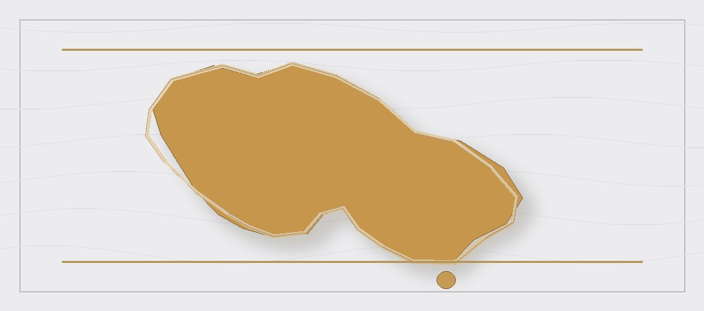

Australia-linked collaborations in experimental archaeology, digital heritage, and comparative method
The Australia section covers collaborations in experimental archaeology, digital heritage, and comparative method anchored in Australian institutions and research networks.
These connections are especially visible through Ben Schoville's current affiliations in Australia and through work on fracture experiments, digital heritage, comparative Stone Age synthesis, and cross-regional archaeological method.
Main themes. Experimental archaeology, fracture mechanics, digital heritage, comparative Paleolithic method, and Australian institutional collaboration.
What this area is doing
- Supporting comparative and experimental work connected to Australian archaeology and archaeological science networks.
- Using controlled fracture and material experiments to strengthen inference about point failure and weapon performance.
- Linking digital heritage work to living heritage, place, and community-centered archaeological practice.
- Extending Kalahari and Stone Age debates through collaborations anchored in Australian institutions.
Representative publications and collaboration outputs
- Did climate change make Homo sapiens innovative, and if yes, how? Debated perspectives on the African Pleistocene record (2024)
- The Tswalu Kalahari Reserve, South Africa (2023)
- The drone, the snake, and the crystal: Manifesting potency in 3D digital replicas of living heritage and archaeological places (2022)
- Holding your shape: controlled tip fracture experiments on cast porcelain points (2022)